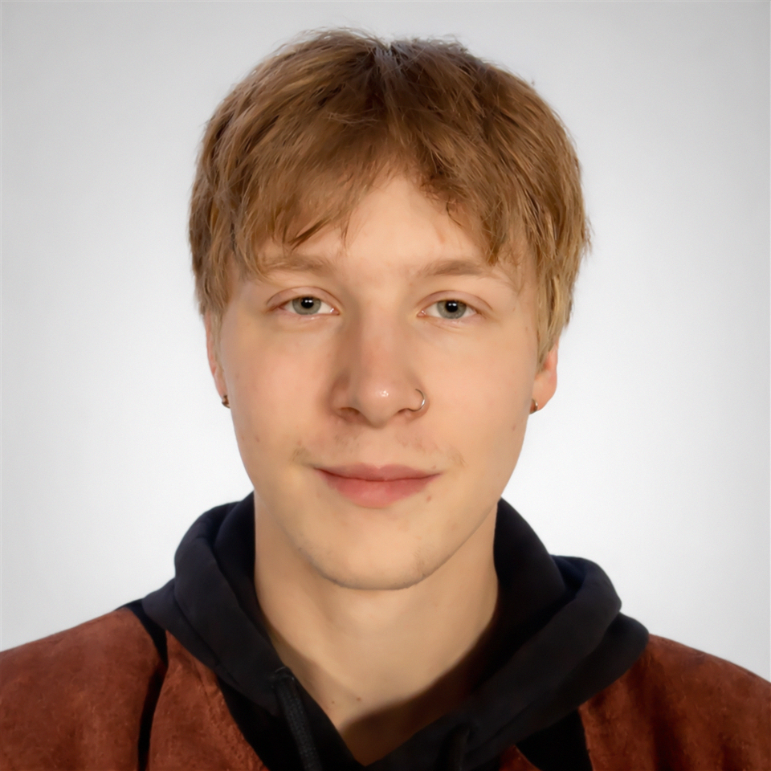

About Me

I am a Bachelor’s graduate in Computer Science with a specialization in Game Development from Malmö University. My primary focus has been in-engine scripting and tooling (Unity & Godot), with emphasis on strong system architecture and code optimization. Aiming to contiously grow and improve in areas in and outside of games, including graphics programming, low level programming and full-stack software development.
My technical foundation includes C/C++, C#, GDScript, SQL, Python, JavaScript, and HTML/CSS. I have worked with tools and frameworks such as Git, Unity, Unreal Engine, and Godot, and I am particularly interested in low-level systems, performance-critical applications, and scalable software design. I am also familiar with various game asset creation workflows such as 3D modeling in various styles and poly-counts in Blender, texture painting, and sound effects.
For my bachelor’s thesis, I was part of developing TopDogEngine, a single-file 3D game prototyping framework written in C++ using Vulkan. The project emphasized user-friendliness, performance, and extensibility, reflecting my interest in clean architecture and efficient real-time rendering systems.
Alongside my technical background, I have professional experience in production and customer-facing roles. I currently work part-time as a consultant in production assembling and testing security and communication devices and building product displays for grocery stores. I have previously worked as a customer service representative where I managed customer cases over telephone and e-mail. The cases were usually handled from first contact to resolution, working across multiple systems under time pressure while maintaining high quality standards.
I am currently actively seeking full-time roles, primarily within systems engineering, embedded software, or game development where I can contribute to robust, high-performance, fun, or otherwise meaningful software solutions.